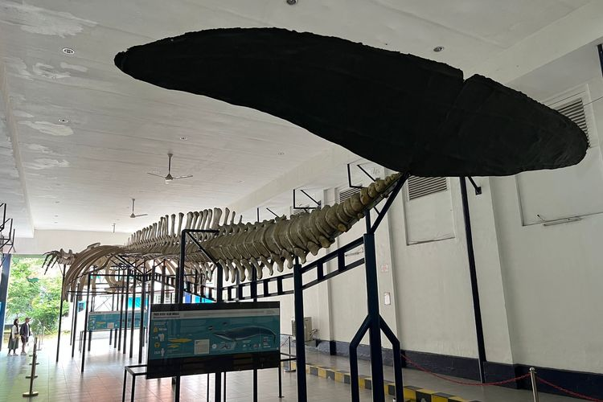
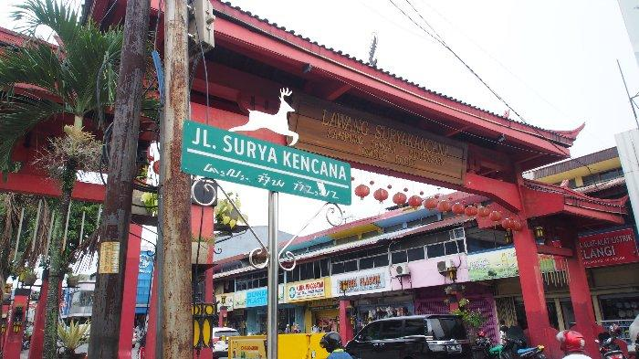

BOGOR
Bogor adalah sebuah kota yang terletak di provinsi Jawa Barat, Indonesia. Kota ini terletak 59 km di sebelah selatan Jakarta, dan merupakan enklave Kabupaten Bogor. Pada pertengahan tahun 2023, jumlah penduduk Kota Bogor sebanyak 1.122.772 jiwa, dengan kepadatan 10.001 jiwa/km²

WISATA EDUKASI

WISATA ALAM
